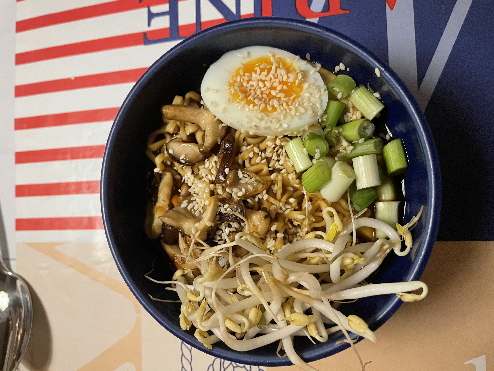
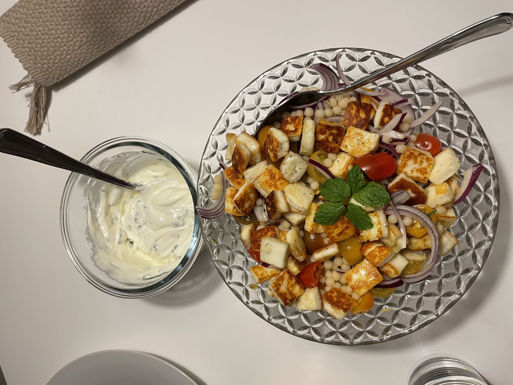
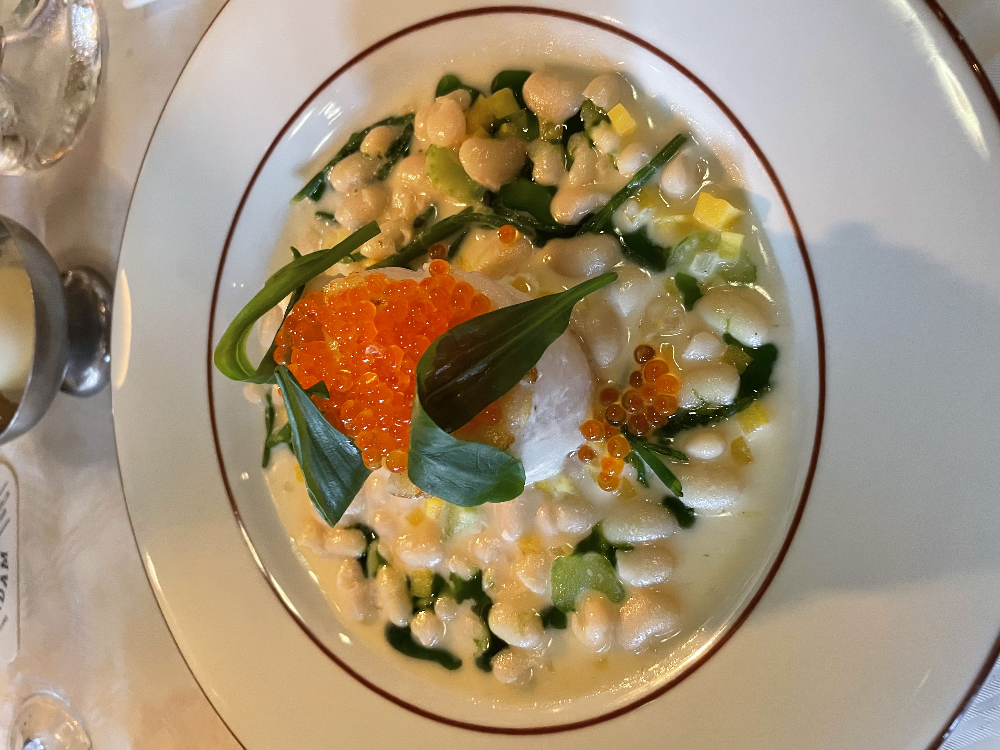

Räk och kräftstjärtspasta
Denna pasta är snabb och går att vispa ihop med en hand bakom ryggen
Gå Till

Asiatisk soppa
Denna soppa är fantastiskt lätt och har en mycket fyllig smak och trevlig ingefärssmak
Gå Till

Tabolhe
En underbar rätt från mellanöstern som erbjuder söttma, syra och hetta. Ett julkort från främmande land
Gå Till

Amsterdam Fisk
En härligt ungsgratinerad torsk med rom och kapris, förtärs bäst med pommes
Gå Till